The feel
A pre-rendered world is a set of finished pictures. Its makers built a 3D model of the place, took shots of it from the spots a player can reach, and let you move by jumping a step at a time, one still view dissolving into the next.1 The effect is calm and uneasy at once. A visiting journalist called Myst "a safe world because nobody dies" and "a scary world because nobody seems to be alive".2
The slow pace is part of the design. With so little moving, players study each image far more closely than they would in a fast action game, and Myst's pictures held up.3 What they find is surface: "light reflecting off dull metal", the grain of the wood, deep shadows in narrow passageways, and no dialog boxes between you and the place.4
- polished
- silent
- uninhabited
- brass and marble
- patient
- slightly too clean
Where it comes from
CD-ROM made the style possible. A disc held 650 MB when floppies held barely 1 MB, yet The 7th Guest (Trilobyte, 1993), the first major game built extensively in Autodesk 3D Studio, still needed two.5 Myst (Cyan, 1993) rendered more than 2,500 screens in StrataVision 3D and linked them together in HyperCard,6,7 and it stayed the best-selling PC game until The Sims overtook it in 2001.6 Riven (1997) moved from Macintoshes to Softimage on Silicon Graphics machines and filled five discs with over 4,000 images,3 while Final Fantasy VII fixed its camera angles to put detailed pre-rendered backgrounds on the PlayStation.8
Core elements
Pre-rendered still views
The world is a stack of still images rendered from one 3D model, shot from each spot where the player can stand, facing each way they can look.9 Rand Miller calls it "a link of still pictures": click on part of one and you go to the next.7
Ray-traced materials and light
Pre-rendering let Myst show the play of light, shadow and texture despite its 8-bit colour.3 Surfaces carry the mood: light on dull metal, wood grain, deep shadow in narrow passages,4 and in Riven a desk of burnished metal and marble, glass, leather, wood and stone.3
Dithered 8-bit colour
Most home computers could only show 256 colours at once, so Myst's images were 8-bit.7 Cyan dithered each one down, with an adaptive palette of 256 colours for each Age.9
Empty environments
These places are empty. Exploring Myst is "a lonely experience because there aren't other people", and finding out where they went is the point.2 What story there is sits in the world: a note on the grass, books on a shelf, a map on the library wall.3
Video overlays and filmed actors
Motion is rationed. Myst had only a few simple QuickTime movies,1 laid over its stills to give an otherwise static screen the illusion of movement,9 and Final Fantasy VII's backgrounds carry small animated pieces so they don't look flat.10 People arrive the same way: The 7th Guest filmed its actors against a blue screen11 and keyed them into the computer-generated house.5
Minimal hand-cursor interface
Myst removed almost every on-screen graphic. A hand-shaped cursor replaces the arrow and carries one object at a time, so no inventory box is needed.3 There are no buttons or menus: the cursor changes over anything you can use.1
How to do it
Map the world on paper first
Cyan's proposal for Myst was little more than top-down maps of every island with notes on them.7 For Riven, every object and room was sketched first and checked against the rules of the world.12 Playtest on paper too: Myst's first testers were walked through the levels by description.9
Render every view from one model
Model the whole place, then put a camera at each spot the player can stand and render a view for each direction they can face.9 Rendering every view from the same model keeps perspective, lighting, texture and geometry consistent from image to image.3 Fix the eye height: Riven's artists dropped a six-foot dummy into each scene to check scale and eye line.3
Build terrain from height maps
Paint terrain as a greyscale image seen from above, dark for low ground and light for high, then extrude it into 3D, as Cyan did for Myst.9 Greyscale bump maps work the same way, with black pushing in and white pushing out.2 For Riven the team photographed real trees, scanned them and pasted the leaves onto branches one by one.2
Ray-trace the stills
Render with a ray tracer, as Myst was.9 Cyan's first test, a ball and a table under one light, came back with shadows, reflections and refraction through glass.7 A point light gives hard-edged shadows, since it is either blocked or not. An area light softens them, and the more lights in its array, the smoother the shadow and the longer the render.13
Cut each area to 256 colours
Myst's frames were 544 x 332 pixels and Riven's 608 x 392.3 Cyan cut each image to 8 bits with an adaptive palette of 256 colours for each Age.9 Build one palette of up to 256 colours from all the renders of an area, then apply it with Floyd-Steinberg or Sierra error diffusion or an ordered 8x8 Bayer dither.14
Limit motion and load times
Lay short videos over the stills to give the screen the illusion of movement.9 Rand Miller worked to the rule that people should get feedback within two seconds of a click,7 and Myst shrank its images to about 57 KB each to load fast from CD-ROM.3
Place 3D characters in pre-rendered rooms
Final Fantasy VII cut its backgrounds into tiles with a draw order, so characters could pass in front of and behind things.10 Today you can render the background once from a fixed camera, save its colour and depth, then load both at runtime and draw only the moving objects.8 Match the game camera to the render, including field of view and near and far planes, and let characters walk on a navigation mesh modelled just above the floor.10
Cheat sheet
- Images
- Myst 2,500. Riven 4,000 on five discs3
- Storage
- About 650 MB per CD. The 7th Guest needed two5
- Drive speed
- 150 KB per second on a single-speed drive7
- File sizes
- About 57 KB per image, sound at 8 bits and 11 kHz3
- Response
- Feedback within 2 seconds of a click7
- Rendering
- Ray-traced stills, one for each standing spot and direction9
Do
- Render every view from the same model, so perspective, light and texture agree from one image to the next.3
- Put the interface inside the world: a map on a wall, books on a shelf, a note on the grass.3
- Spread cause and effect across the map with pipes, power lines and gears, so the player has to walk to see what a lever did.3
- Give every object a reason to be there. As Rand Miller puts it, "everything in the real world has a story to it".7
- Keep the happy accidents. The 7th Guest couldn't clean the blue-screen fringe off its actors, so the fuzzy line became part of its ghosts.11
Avoid
- Long waits between views. Chris Crawford complained of an agonising delay on every transition in Myst: "You point, you click, and you wait."1
- Clips the player can't skip. A trade magazine faulted The 7th Guest because its videos, once triggered, can't be interrupted.5
- Puzzles dropped in from nowhere. Rand Miller contrasts The 7th Guest, which "would just throw some puzzles in", with Cyan's aim of making puzzles part of the history of the place.7
- Changing the eye height between views. Seeing a hallway from six feet up and the next room from eight or ten feet is jarring.3
- A render camera that doesn't match the game camera. Characters will seem to stand on top of the scene instead of inside it.10
Tools and tutorials
- POV-Ray
A free ray tracer. Point lights give hard shadows, and area lights soften them.13
- Blender
Model the whole scene in full detail with materials and lighting, then render each fixed view.10
- Unity HDRP: Pre-rendered backgrounds
Matias Lavik saves colour and depth from a fixed camera, then draws live objects on top.8
- Prerendered backgrounds with baked depth
The same trick in Godot 4, with practical warnings about depth formats.
- FFmpeg paletteuse
Cut frames or movies to 256 colours and pick the dither.14
- Decker
A modern tool in the spirit of HyperCard, for card-by-card worlds.
Palette
Sampled from Myst, Riven, The 7th Guest and Final Fantasy VII. In a real 8-bit frame you would have 256 shades built around one or two of these, chosen again for each scene.
Feel the vibe
Listen
By Robyn Miller, who created Myst with his brother Rand.6 Quiet, modest and a little sad.
YouTubeFrom Riven. Slower and stranger, with plenty of air in it.
YouTubeFrom Zork Nemesis, one of the games below. Slow and dark, for halls nobody has walked in years.
YouTubeFrom Final Fantasy VII, which fixed its camera angles in exchange for detailed pre-rendered backgrounds.8
YouTubeJan Hammer wrote it for Beyond the Mind's Eye, a computer animation video.15 Listen to how it carries slow glides through rendered space.
YouTube
More references
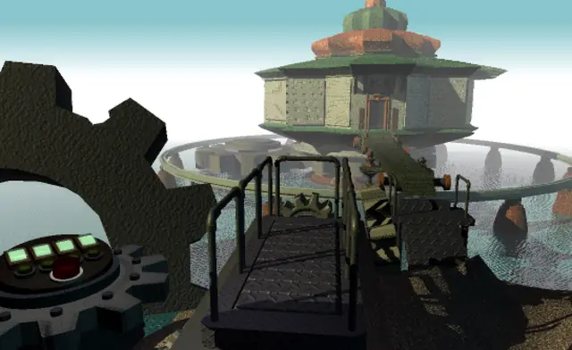
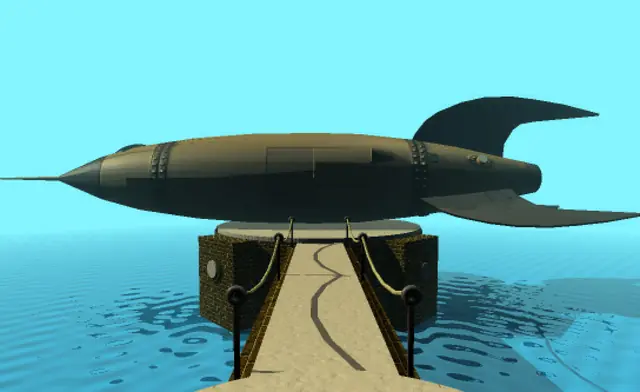
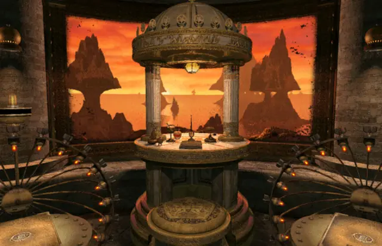
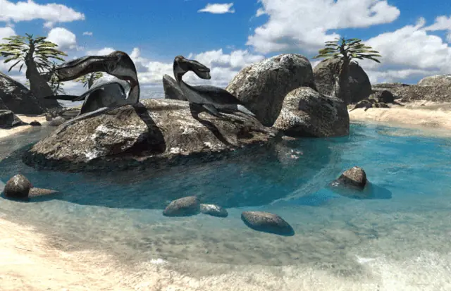
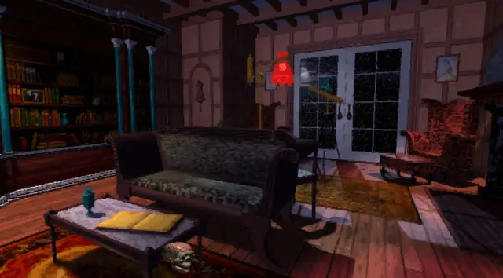
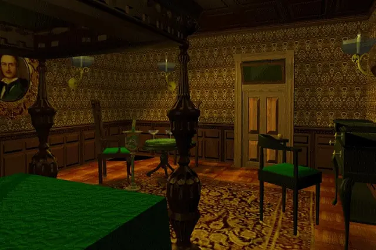
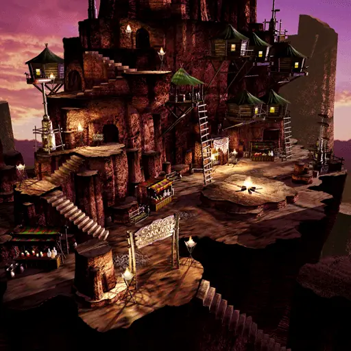
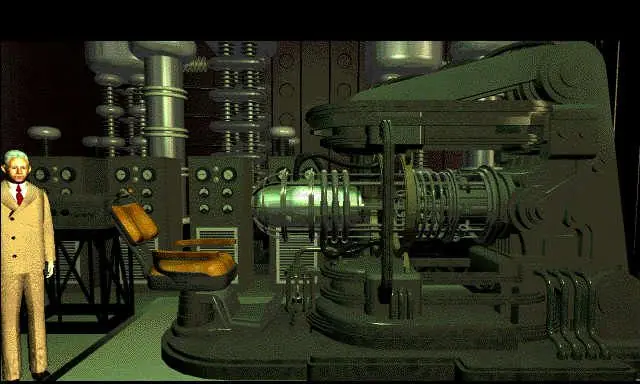
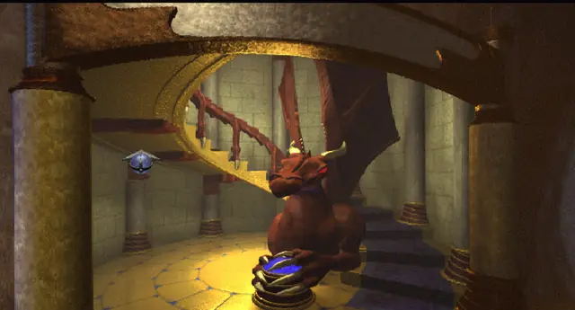
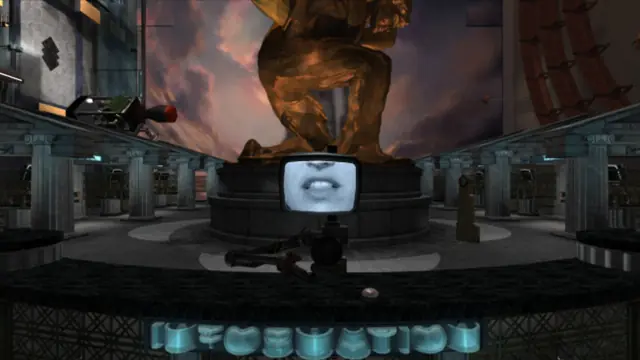
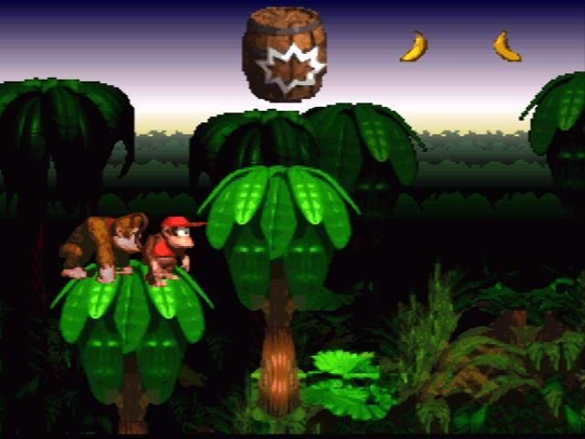
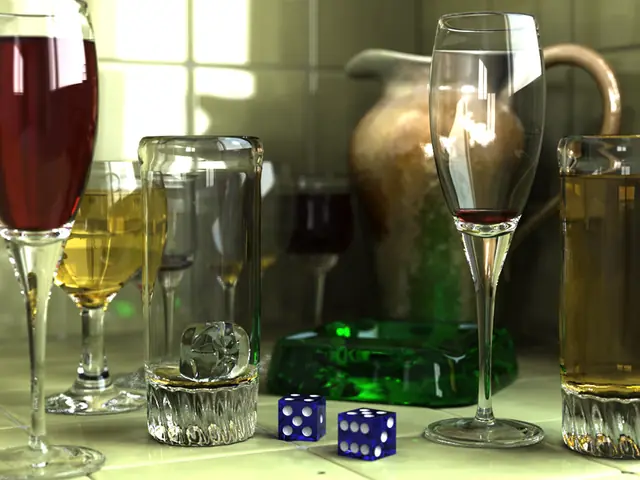
Games
- Myst
Study how each frame shows places several moves away and pulls you towards them.3
- The 7th Guest
The haunted house that drove the first big wave of CD-ROM drive sales.5
- Riven
Over 4,000 images on five discs. Study its stone, metal and wood up close.3
- Final Fantasy VII
Fixed cameras over detailed rendered rooms. Study how characters pass in front of and behind things.10
- Gadget: Invention, Travel, & Adventure
Study its dark machine rooms and how each view frames the next.
- Zork Nemesis
Study how its gothic rooms are lit and dressed.
- Obsidian
Study its surreal rendered environments.
- Donkey Kong Country
Rare built 3D models on Silicon Graphics machines and broke them down into sprites.16
Film, art and more
- The Mind's Eye
Watch it for the surfaces and camera moves of early computer animation.
- The Lawnmower Man
Compare its computer-generated sequences with the games' rendered rooms.
- Ray tracing
Rand Miller's first test render, a ball and a table under one light, came back with shadows, reflections and refraction through glass.7
- Bryce
Compare its rendered skies, water and terrain with Myst's islands.
- ReBoot
A visual parallel: shiny early CG surfaces, on television.
- Toy Story
Compare its plastic and wood with the games' brass and stone.
- Myst: The Book of Atrus
How much history can sit behind a set of empty rendered rooms.
Sources
- 1Myst
- 2Into The Myst: It's a safe world, a story, a work of art, and 1.2 million people bought it
- 3Myst and Riven: The World of the D'ni
- 4Guerrillas in the Myst
- 5The (7th) Guest's New Clothes
- 6Myst
- 7Video: How Myst's designers stuffed an entire universe onto a single CD-ROM (transcript)
- 8Unity HDRP: Pre-rendered backgrounds
- 9Construction
- 10An Adventure in Pre-Rendered Backgrounds
- 11Horror Story: An Oral History of The 7th Guest
- 12Cyan Striving To Repeat: Stakes High For Spokane Company As It Wraps Up Work On Myst Sequel
- 13POV-Ray 3.6 Documentation: Area Lights
- 14FFmpeg Filters Documentation: palettegen and paletteuse
- 15Reviews for the Album "Beyond The Mind's Eye"
- 16Kings of the Jungle: The Making of Donkey Kong Country, Chapter 2